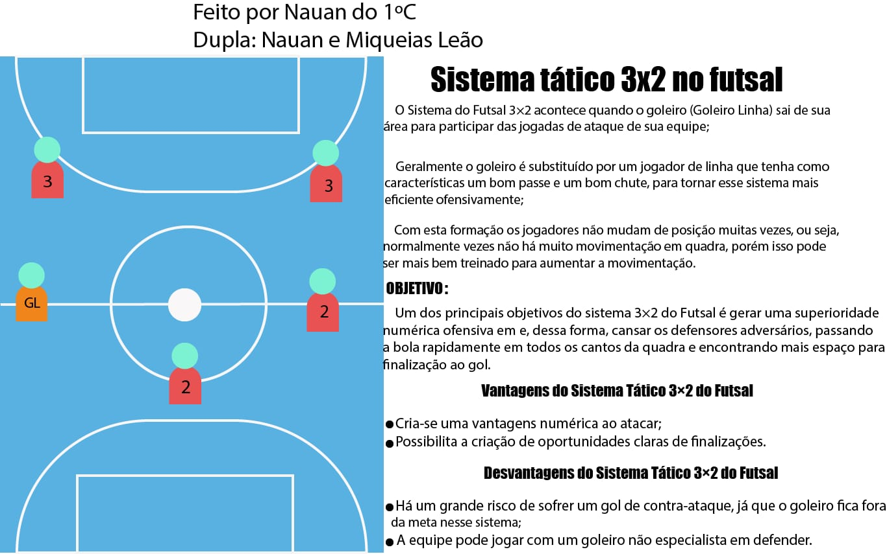

As táticas do futsal são as teorias da técnica colocadas em prática na quadra de jogo, com todas as variações que poderão acontecer de acordo com a atuação do adversário
falarei sobre a tatica 2x2
Esquema tático no futsal 2-2: este esquema é DEFENSIVO, geralmente empregado por equipes iniciantes ou de categorias menores, tendo como principal característica dificultar o aumento do placar no caso de estarem em deficiência com relação ao adversário. Ofensivamente apresenta pouca objetividade, pois sua movimentação é restrita.Em relação ao grupo de jogadores , este esquema restringe as habilidades, pois não oferece uma movimentação durante o desenrolar da partida, dificultando o trabalho com a bola e os lançamentos. Mas se deve ter em mente que em determinados momentos, um esquema como este, o determinado "caixote", quando bem aplicado, e muito bem treinado, realmente dificulta que o adversário adentre no campo de ação da equipe, restando à esta os chutes de média e longa distância, que poderão resultar em algo, de acordo com o tamanho da quadra de jogo.

Agora vou falar um pouco sobre a formaçã 3x2, na imagem abaixo
Proxima pagina
Voltar a pagina inicial